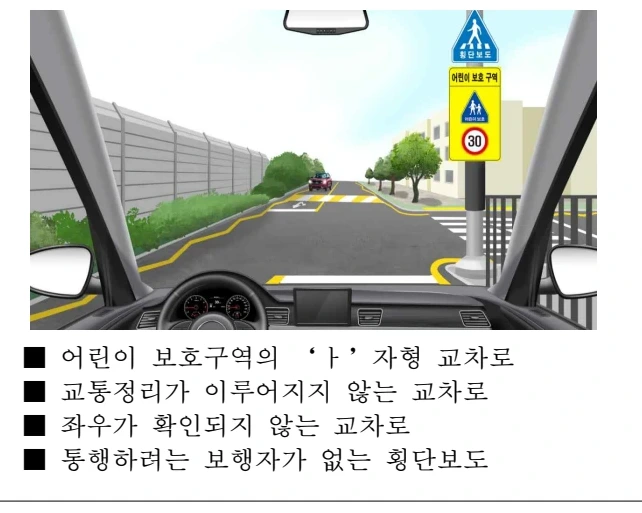

797. Which of the following are the safe ways to drive in the given situation? (Select TWO)

- ①Drive slowly through the crosswalk to turn right.
- ②Stop before the crosswalk when trying to turn right.
- ③Slowly enter the intersection to go straight, as you have the right of way.
- ④Make a full stop before going straight or turning right.
- ⑤Make a full stop only when you are trying to turn right.
Show answer
Answer
② Stop before the crosswalk when trying to turn right.
④ Make a full stop before going straight or turning right.
Reference
Article 31 of the Road Traffic Act (Places to slow down or stop) Paragraph 2. The driver of any car or streetcar must temporarily stop at any of the following places: 1. An intersection where traffic control is not in place and the left and right sides cannot be checked, or where traffic is frequent. 2. A place designated as a safety sign by the city/provincial police chief as deemed necessary to prevent danger on the road and ensure safety and smooth flow of traffic. The situation shown is a place where it is difficult to check the right side and is a place where you must stop temporarily. In this case, you must stop temporarily for both going straight and turning right. Article 27, Paragraph 7 of the Road Traffic Act. The driver of any car or tram must temporarily stop in front of a crosswalk without a signal (if a stop line is installed, this refers to the stop line) among the crosswalks installed in the child protection zone under Article 12 (1) of the same Act, regardless of whether pedestrians are crossing.
Reference text is a machine translation for study.